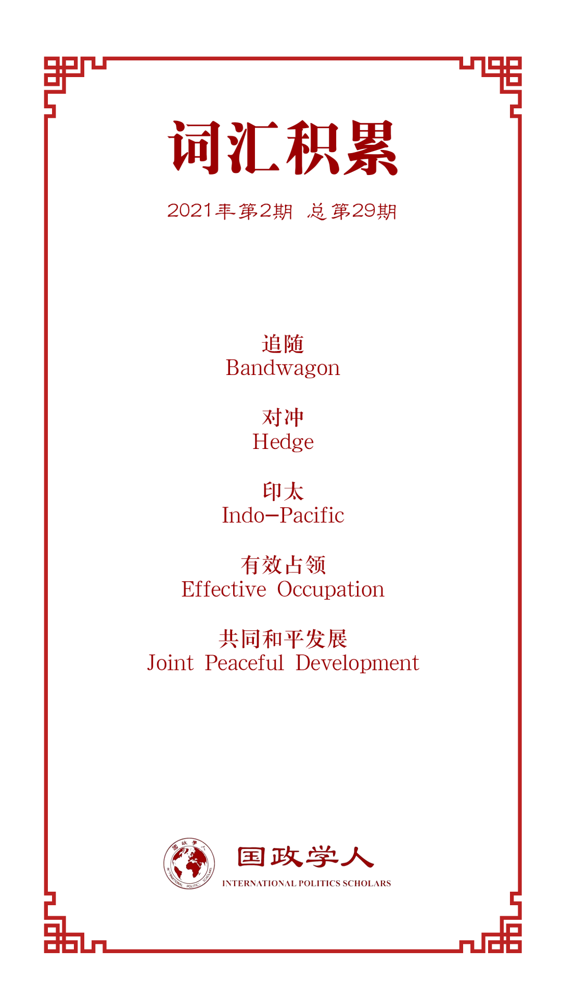

收录于合集

作品简介
【作者】 Andrey Dikarev，莫斯科国际关系学院中亚及上海合作组织中心首席研究员；Alexander Lukin，俄罗斯国立高等经济大学世界经济与国际事务系系主任，莫斯科国际关系学院东亚和上海合作组织研究中心主任。
【编译】 伍雨荷（国政学人编译员，北京大学外国语学院本科生）
【校对】 吕紫烟
【审核】 姚寰宇
【排版】 韩柯
【美编】 方引弓
【来源】 Dikarev, Andrey, and Lukin, Alexander. “Russia’s approach to South China Sea territorial dispute: it’s only business, nothing personal.” The Pacific Review (2020): 1-30.
【归档】 《国际关系前沿》2021年第2期，总第29期。
期刊简介
《太平洋评论》（The Pacific Review）是太平洋地区研究的主要平台，作为跨学科期刊，其宗旨和目标为打破研究领域之间以及学术界、新闻界、政府和商界之间的壁垒。据Journal Citation Reports，2019年该刊的影响因子为1.633，在区域研究类SSCI期刊中排名11，在国际关系类SSCI期刊中排名第35。
**** 俄罗斯在南海领土争端上的政策选择：独立自主，务实外交
Russia’s approach to South China Sea territorial dispute: it’s only business, nothing personal
Andrey Dikarev
Alexander Lukin
内容提要
学界少有人探讨南海争端对中俄关系的影响、研究其中表露出的中俄关系的特点。俄罗斯在南海争端中倾向中国，但并未明确支持中国的领土主张，并与中国在南海地区的竞争对手建立了密切的合作。本文作者认为，俄罗斯对南海争端的态度仅取决于本国的经济利益。本文旨在介绍俄罗斯在南海地区政治、经济活动的近况，阐明俄罗斯在南海争端上有此态度的原因。
文章导读
01
导论
首先，本文阐明了 “制衡”（balancing）、“追随”（bandwagoning）和“对冲”（hedging）三种行动模式的定义：“制衡”指弱国为防止霸权产生与存在分歧或缺乏共同利益的其他国家进行合作，“追随”指弱国为维护安全或获得利益而支持实力更强的国家，“对冲”则介于二者之间，指一国与国力相当的国家结盟，以此防止霸权产生、避免其他强国的过度介入。
为了确认俄罗斯对南海政策是否符合上述模式之一，本文首先对中俄关系进行了回顾。中俄两国之间的关系目前处于历史最高水平，经过了2014年的克里米亚危机和2016年的中美贸易战，两国均充分认识到了中俄友好关系的重要性。在南海问题上，中俄两国对美、日、印、澳共建的四方安全对话不满，联合抵制“印太地区”的区域愿景。俄罗斯认为印太地区是一个“人为强加的结构”，具有“遏制中国的深远意味”，这也带有“让印度参与军事、政治和海军进程”的明显企图，破坏了该地区以东盟为中心的原有模式。俄方不希望印度倒向美国一侧，更担忧印太战略可能在根本上破坏俄罗斯在欧亚大陆上的独特地位。而在南海问题上，俄罗斯意图利用中国平衡美国的影响、阻止美国建立全球霸权。
02
中国在南海的利益
至少从上世纪50年代后期起，中国一直在稳步设法最大程度地控制南海，宣示其无可争辩的主权。数十年来，中国在外交军事上经历了对东南亚国家的“强力施压”（power pressure）和对个别岛屿的军事占领、“主动等待”（active waiting）、“共同开发”（joint development）和“向南飞跃”（leap south）四大战略阶段，最终走向了“共同和平发展”（joint peaceful development）。2009年5月，南海领土争端升级，中国对菲律宾等国向联合国提交的材料做出了严厉的回应，并向联合国递交了抗议信以及带有“九段线”的南海地图。此后，为南海资源进行的斗争进入了全新阶段，冲突逐渐体现出全球化的特征。中国反对国际法律机构介入区域性纠纷，同时又联合在南海无直接利益的国家，试图在东盟内部挑拨离间。“海上丝绸之路”倡议概念的提出，更标志着中国将南海地区的活动置于更大的战略框架之内。
据此，本文赞成海顿（Hayton，2014）的观点， 认为中国在该地区的利益包括以下四点：（1）对南海有历史权利意识，渴望维护国家威望; （2）为保护沿海城市提供海上防御的“战略纵深”；（3）为有效实施“一带一路”倡议而确保进入印太公海；以及（4）自由获取油气及渔业等海洋资源。
多年来，中国要求四个群岛中的所有岛屿都处于中国的绝对管辖之下，并通过立法等形式为其向南的军事、经济发展确立了法律基础。鉴于中国在南海地区实际上只占据了少数几个岛礁，它与竞争对手相比几乎不占任何法律优势。这也是中国大规模建造带有军事(和/或民用)基础设施的人工岛的原因。值得注意的是，由于《联合国海洋法公约》对此没有明确规定，因此中国这种行为并未违反任何国际法。中国计划随后将这些“有效占领”（effective occupation）的小型岛礁归类为成熟的岛屿。尽管在其他国家承认中国对于这些岛屿主权归属的情况下，中国政府愿意承认南沙群岛上已建立的控制区并商讨现状，但目前这种妥协性质的合作几乎是不可能的。此外，对于“共同资源开发”计划，南海地区国家担忧中国这种利用伙伴关系直接进入东南亚邻国已经宣布拥有管辖权的水域和岛屿，并运用军事、金融等手段实现实际控制。总而言之，只有地区内各国就领土问题达成共识之后，才有可能真正实现发展，但迄今为止这种共识仍是遥遥无期。
03
**
**
俄罗斯的地区政策
自21世纪初以来，俄罗斯一直寻求在亚洲推行更加积极的政策。加强与中国的合作一直是这项政策的重中之重，但与此同时，莫斯科也一直在与其他亚洲国家发展关系。在亚洲安全领域，俄罗斯始终奉行独立政策，避免卷入中国东海和南海地区的领土争端。
2016年海牙国际法庭就南海仲裁案作出决议时，中国积极寻求国际社会对其立场的支持。但是，俄罗斯联邦外交部面对中国的表态被迫发表评论，表示支持争端必须由争端当事方解决，拒绝外部干预，不表态支持中国或其他国家的具体领土主张。
然而，尽管表面上持中立态度，俄罗斯的立场仍然可以被描述为“亲中国”。俄罗斯在某些问题上与中国的立场越来越接近，但并不完全一致。相反，中俄两国之间更接近于“在互惠的基础上开展合作”，这体现在莫斯科参加2016年的南海演习，换取次年中国参加波罗的海的军事演习。尽管认识到深化中俄关系的重要性，俄罗斯并不打算为此牺牲自己的利益。中方也没有要求俄罗斯就此做出重大让步，而是更多地强调“互惠互利”。
限制俄罗斯在南海问题上明确支持中国的最重要因素是俄罗斯与地区其他国家的合作。俄罗斯与越南的合作最为成熟，而越南正是中国在南海争端中的直接对手。俄越在军事和能源两方面的合作对南海局势直接产生影响：在军事方面，俄罗斯是越南军队的主要军事硬件供应商，由于南海争端加剧了与中国的领土争端，越南增加了从俄罗斯的海军装备采购。中国对此表示担忧，但并不会在实质上予以阻拦。在能源方面，俄越在南海地区的联合油气开发是两国合作的重要组成部分。尽管中国对南海地区所有外国能源公司持续施压，俄罗斯也并未就此退缩。
另一个影响俄罗斯在南海立场的主要国家是印度。俄罗斯是印度主要的武器供应国之一，而中印之间长期存在领土争端，且印度也是南海地区主要的利益相关方之一。印度十分关切航行和贸易路线的自由，将中国视为重要的地缘政治挑战，同时也有意参与南海地区的能源开发。基于此，印度积极倡导印太概念（Indo- Pacific），主张通过法律和外交程序和平解决分歧。俄罗斯对“四方”和印的概念持消极态度，但它也重视与印度的关系，不愿在印度和中国之间做出选择，其政策表现出务实的性质。
由此可见，在不断发生的争端中，俄罗斯努力在不破坏与任何一方的关系的前提下寻求自身利益的最大化。与南海地区其他国家的合作不允许俄罗斯明确地与中国站在一起。俄罗斯既需要避免陷入中国与该地区国家之间的冲突，又需要通过支持中国来抵抗美国对亚太事务的干涉；美国干涉亚太地区的意愿越强，俄罗斯就越有可能对中国的南海主张表示默认。
此外，中国在北极地区航行自由问题上的立场有可能影响俄罗斯对南海问题的态度。中国在南海地区的主权诉求立足于历史权利之上，但中国拒绝俄方以历史权利为由对北极提出的主权诉求，不承认俄罗斯主张限制北极航行的权利。此外，中国在官方层面提出了“冰上丝绸之路”概念，并将其写入《中国北极战略》，但由于“冰上丝绸之路”途经俄罗斯宣示主权的领土，俄罗斯对此表示了拒绝。鉴于中国的做法，俄罗斯在南海问题上向中国靠拢当然是没有意义的。
04
结论：俄罗斯会否对冲中国？
如上所示，俄罗斯在南海争端中的政策既非“制衡”，也非“追随”。但是，“对冲”一词也无法准确描述俄罗斯对南海局势的态度。 本文认为，俄罗斯的政策目标并非对冲中国的影响。鉴于中国没有构成严重的安全威胁，俄罗斯在该地区的政治利益也很小，可以认为俄罗斯的政策目标旨在保留其传统市场，在中国不断扩大的利益范围内维护自己的经济利益——换言之，统治阶层精英集团的利益。
在与西方对抗的背景下，中俄合作在经济和战略层面都极具重要性，但这并不意味着俄罗斯愿意为此牺牲统治集团的经济利益。 中俄战略伙伴关系的核心在于相互支持、彼此妥协，共同预防出现新的矛盾。 俄罗斯加码中俄关系意在平衡美国霸权，同时它也试图维持与欧盟、美国、日本和韩国的合作的可能，以此防范来自中国的威胁。
**
**
作者认为，作为“欧亚文明领导者”，俄罗斯理应谋求与中国建立良好关系，与此同时也应和其他亚洲国家保持合作可能；维持这种关系并非意在针对中国，而是为了维护俄罗斯自身的利益。
译者评述
本文从俄罗斯国家政治- 经济利益角度出发，深入分析了南海争端中掣肘俄罗斯政策选择的各方因素。自上世纪末确立大国外交模式以来，俄罗斯对外政策的战略核心始终在于维护自身传统利益、与其他大国分享权力，同时牵制世界舞台上可能的政治威胁，这些特征在俄罗斯与南海地区诸国的互动中得到了充分的体现。作为俄当下对外关系的重点，中国是俄罗斯在亚洲国际地位最高、经济体量最大的邻国。中俄之间没有上升到官方层面的领土争端，这为外交关系的稳定发展奠定了基础；两国政治转型方向的相似性、经济发展结构的互补性，更无疑是深化外交关系进程中的利好因素。
然而，两国行动逻辑的一致性完全取决于两国在世界舞台上的共同利益追求。对中俄关系产生干预作用的主要外部因素是两国都面临来自美国的遏制。尽管如此，俄罗斯的主要战略着眼点在于其周边地区，中国的主要战略着眼点已经超越周边地区，指向与美国之间的关系结构及国际秩序调整。这一点既体现在中国在俄传统势力范围中亚地区的布局上，也体现在俄罗斯与南海周边其他利益相关国的频繁互动上。从实际战略能力上来说，俄罗斯在美国南海航行自由问题上，能够给予中国的直接支持，只能是立场或姿态上的。从这一角度看来，本文为分析中俄关系所选择的切入点是颇为新颖且独到的。
参考文献
[1]初智勇：《中俄利益互助型战略合作的形成机制及特征》，《俄罗斯研究》2019年第4期，第58-91页。
词汇整理

文章观点不代表本平台观点，本平台评译分享的文章均出于专业学习之用, 不以任何盈利为目的，内容主要呈现对原文的介绍，原文内容请通过各高校购买的数据库自行下载。

好好学习，天天“在看”
国政学人
支持学术公益与知识传播
微信扫一扫赞赏作者 __赞赏
已喜欢，对作者说句悄悄话
取消 __
发送给作者
发送
最多40字，当前共字
上一页 1/3 下一页
长按二维码向我转账
支持学术公益与知识传播
受苹果公司新规定影响，微信 iOS 版的赞赏功能被关闭，可通过二维码转账支持公众号。